본문
사인·코사인 수학 개념은 별도 문서에서
직각삼각형의 길이 비율, 닮음, 단위원, sin²θ+cos²θ=1의 유도 과정은 수학 문서로 분리했습니다. 여기서는 위치 인코딩에 직접 필요한 원 위의 좌표와 회전 성질부터 이어갑니다.
왜 짝수 차원에는 sin, 홀수 차원에는 cos를 넣을까?
사인과 코사인은 서로 별개의 장식이 아니라, 원 위에 있는 점 하나를 나타내는 두 좌표입니다. 같은 각도 θ에 대해 cos(θ)는 가로 좌표, sin(θ)는 세로 좌표를 나타냅니다.

각도 θ가 정해지면 cos(θ)와 sin(θ)가 원 위의 위치 하나를 함께 결정합니다. 두 값은 sin²(θ)+cos²(θ)=1을 만족하므로 한 쌍의 크기는 항상 일정합니다.
코드의 한 차원 쌍은 원 위의 점 하나다
코드에서는 같은 각도 θ = position × div_term[i]를 사용해 짝수·홀수 차원 한 쌍을 만듭니다.
차원 2i, 2i+1같은 θ 공유
θ = position * div_term[i]
pe[position, 2 * i] = math.sin(θ) # 세로 좌표
pe[position, 2 * i + 1] = math.cos(θ) # 가로 좌표
일반적인 좌표 표기는 (cos θ, sin θ)이지만, Transformer 코드는 저장 순서를 [sin θ, cos θ]로 사용합니다. 순서만 다를 뿐 같은 원 위의 점을 표현합니다.
같은 각도축에 사인과 코사인을 겹쳐 보기
두 함수는 값의 범위와 반복 주기가 같지만 출발점이 다릅니다. 사인은 0에서 시작하고, 코사인은 1에서 시작합니다.

초록색 사인과 주황색 코사인은 같은 모양을 같은 주기로 반복하지만 π/2=90°만큼 시작 위치가 다릅니다. 각 세로선에서 두 값을 함께 읽으면 같은 각도의 [sin θ, cos θ] 한 쌍이 됩니다.
| 각도 | sin θ | cos θ | 저장되는 한 쌍 |
|---|---|---|---|
| 0 | 0 | 1 | [0, 1] |
| π/2 | 1 | 0 | [1, 0] |
| π | 0 | -1 | [0, -1] |
| 3π/2 | -1 | 0 | [-1, 0] |
| 2π | 0 | 1 | [0, 1] |
코드에서는 position×div_term[i]가 표의 각도 역할을 합니다. 그 각도에서 초록색 곡선의 값은 짝수 차원에, 주황색 곡선의 값은 바로 다음 홀수 차원에 저장됩니다.
왜 sin 하나가 아니라 cos를 함께 쓰는가?
sin 값이 서로 겹칠 수 있다는 사실만으로는 설명이 충분하지 않습니다. 여러 속도의 sin을 조합해 절대 위치를 구분할 수도 있기 때문입니다. 빠진 핵심은 현재 파동의 높이가 같더라도 위치가 증가할 때 움직이는 방향은 다를 수 있다는 점입니다.
sin 하나: 현재 높이만 안다
sin 30° = sin 150° = 0.5입니다. 두 각도는 파동의 서로 다른 지점이지만 sin 값 하나만 저장하면 모두 0.5로 보입니다.
→
sin + cos: 높이와 방향을 함께 안다
cos 30°는 양수이고 cos 150°는 음수입니다. 따라서 같은 sin=0.5라도 한쪽은 sin 값이 증가하는 구간이고, 다른 쪽은 감소하는 구간임을 구별할 수 있습니다.
현재 각도30° → [sin=0.5, cos=+0.866]
10° 증가40° → sin≈0.643 · 값이 증가
현재 각도150° → [sin=0.5, cos=-0.866]
10° 증가160° → sin≈0.342 · 값이 감소
실제 코드에서는 각도가 10°씩 증가하는 대신, 위치가 하나 증가할 때마다 해당 차원 쌍의 div_term[i]만큼 라디안이 증가합니다. 원리는 같습니다.
현재 이해의 핵심 — sin은 현재 파동의 높이를 주고, 같은 각도의 cos는 그 지점에서 위치가 증가할 때 sin 값이 어느 방향으로 변하는지를 보완합니다. 그래서 같은 속도의 sin/cos를 반드시 한 쌍으로 저장합니다. 이는 인접한 위치뿐 아니라 일정 거리만큼 떨어진 위치의 변화를 다루는 데도 도움이 됩니다.
한 바퀴 이후에는 여러 속도의 전체 조합을 본다
[sin θ, cos θ] 한 쌍도 θ+2π에서는 반복됩니다. Transformer는 속도가 서로 다른 256개의 sin/cos 쌍을 사용합니다. 빠른 쌍이 한 바퀴 돌아 같은 값이 되더라도 느린 쌍들은 다른 지점에 있으므로, 위치는 어느 차원 값 하나가 아니라 차원 순서를 포함한 512개 값의 전체 조합으로 표현됩니다.
위치가 증가하면 원 위의 점이 회전한다
position 0θ=0 → [sin θ, cos θ] = [0, 1]
position 1θ=div_term[i] → 조금 회전한 점
position 2θ=2×div_term[i] → 같은 속도로 더 회전
position pθ=p×div_term[i] → 위치 p의 각도
div_term[i]가 크면 위치가 하나 증가할 때 많이 회전하고, 작으면 조금만 회전합니다. 그래서 차원 쌍마다 서로 다른 크기의 위치 변화를 감지할 수 있습니다.
왜 이 값들이 위치 정보가 될 수 있을까?
핵심은 위치 번호가 달라지면 각도가 달라지고, 각도가 달라지면 원 위의 좌표 [sin θ, cos θ]도 달라진다는 것입니다. 먼저 div_term=1인 차원 쌍 하나만 보겠습니다.

위치가 0→1→2→3으로 바뀌면 각도가 0→1→2→3라디안으로 바뀌고, 주황색 점이 원 위의 서로 다른 곳으로 이동합니다. 따라서 각 위치가 서로 다른 숫자 쌍을 갖습니다.
position0, 1, 2, 3, ...
각도position × div_term[i]
원 위의 좌표[sin(각도), cos(각도)]
결과위치가 다르면 저장되는 좌표도 달라짐
차원 쌍마다 속도가 달라 위치의 ‘지문’이 된다
차원 쌍 하나만 보는 것이 아니라 빠른 회전, 중간 회전, 느린 회전을 동시에 기록합니다. 마치 시계의 초침·분침·시침을 함께 보면 현재 시각을 더 정확히 알 수 있는 것과 같습니다.

위치가 하나 바뀌면 모든 원의 손잡이가 각자의 속도만큼 움직입니다. 빠른·중간·느린 원의 방향을 모두 이어 붙인 조합이 그 위치를 나타내는 512차원 지문이 됩니다.
d_model=8의 축소 예에서는 위치마다 다음처럼 서로 다른 벡터가 만들어집니다. 세로선 |은 같은 각도를 공유하는 sin/cos 차원 쌍의 경계입니다.
d_model=8위치별 지문
position 0 [0, 1 | 0, 1 | 0, 1 | 0, 1]
position 1 [.841, .540 | .100, .995 | .010, 1.000 | .001, 1.000]
position 2 [.909,-.416 | .199, .980 | .020, 1.000 | .002, 1.000]
같은 단어라도 위치 0에서는 0번 위치 벡터가, 위치 2에서는 2번 위치 벡터가 더해집니다. 따라서 Transformer에 들어가는 최종 입력이 달라져 모델이 두 토큰의 위치를 구별할 수 있습니다.
그래프 형태로 이해하기
각 위치의 토큰마다 512개의 값으로 이루어진 서로 다른 그래프 형태 하나가 더해지고, 그 그래프 형태 전체가 해당 토큰의 위치정보라는 의미를 갖습니다.
position 0PE[0]의 512개 값 → 그래프 모양 하나
position 1PE[1]의 512개 값 → 다른 그래프 모양 하나
position 2PE[2]의 512개 값 → 또 다른 그래프 모양 하나
512개의 그래프가 토큰에 들어가는 것이 아닙니다. 512개 차원값을 x축 차원 순서대로 그렸을 때 나타나는 그래프 하나가 그 위치의 512차원 패턴을 눈으로 표현한 것입니다.
100번째 토큰으로 복습하기
문장의 100번째 토큰에는 100번째 위치 벡터가 들어갑니다. d_model=512라면 100번째 토큰 벡터의 1번째 차원에는 100번째 위치 벡터의 1번째 값이, 2번째 차원에는 2번째 값이, 마지막 512번째 차원에는 512번째 값이 각각 대응되어 더해집니다.
사람 기준 100번째 토큰코드 인덱스 99
100번째 토큰의 1번째 차원 + PE[99]의 1번째 값
100번째 토큰의 2번째 차원 + PE[99]의 2번째 값
...
100번째 토큰의 512번째 차원 + PE[99]의 512번째 값
즉, 100번째 토큰 벡터의 각 차원에 100번째 위치정보의 각 차원값이 하나씩 대응되어 들어갑니다. Python은 0부터 세므로 코드에서는 100번째 위치 벡터를 PE[99]로 선택합니다.
핵심 — 사인과 코사인 값 하나가 위치 번호를 직접 적어 두는 것은 아닙니다. 여러 속도의 sin/cos 좌표 256쌍을 합쳐 위치마다 다른 패턴을 만들고, 그 패턴을 토큰 임베딩에 더하기 때문에 위치 정보가 됩니다.
왜 sin 하나만 사용하지 않을까?
sin 값 하나만 보면 원 위의 서로 다른 두 점이 같은 값을 가질 수 있습니다. 예를 들어 sin(θ)=sin(π-θ)입니다. cos를 함께 보면 가로 좌표의 부호와 크기까지 알 수 있어 현재 각도의 상태를 더 완전하게 표현할 수 있습니다.
sin(θ)만 저장
세로 좌표만 알기 때문에 같은 높이를 가진 서로 다른 위치를 구별하기 어렵습니다.
→
sin(θ)와 cos(θ) 함께 저장
가로·세로 좌표를 모두 사용해 원 위의 각도 상태를 한 쌍으로 표현합니다.
상대적인 위치 이동도 회전으로 표현된다
위치가 p에서 p+k로 이동하면 각도에는 k×div_term[i]가 더해집니다. 삼각함수의 덧셈 공식 때문에 새 위치의 sin/cos 값은 기존 위치의 두 값을 섞는 회전으로 계산할 수 있습니다.
여기서 Δ=k×div_term[i]는 절대 위치 p가 아니라 두 위치 사이의 차이 k에 의해 결정됩니다. 이것이 사인·코사인 위치 인코딩이 상대적인 거리 패턴도 다루기 좋은 이유입니다.
한 문장 결론 — 짝수·홀수 차원의 sin/cos 한 쌍은 같은 각도로 회전하는 원 위의 점 하나를 표현합니다. 위치가 바뀌면 점이 회전하고, 차원 쌍마다 회전 속도가 달라 Transformer가 짧은 거리부터 긴 거리까지 다양한 위치 관계를 구분할 수 있습니다.